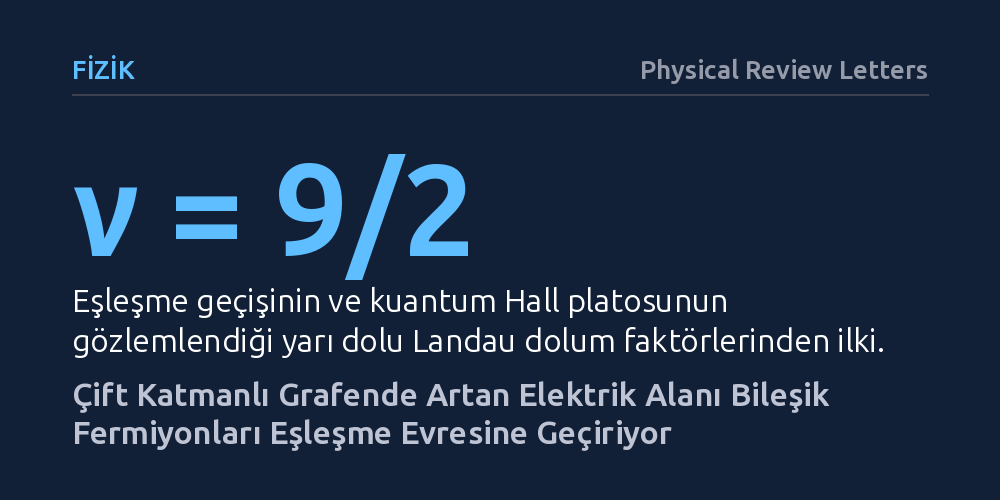

FIZIK · Physical Review Letters · 2026-10-19
Araştırmacılar, çift katmanlı grafende orbital yapıyı elektriksel kaydırma alanıyla kontrol ederek bileşik fermiyonların eşleşme geçişini inceledi. Artan alanla birlikte iletken hallerin yerini direnç platolarına bıraktığı ve parçacıkların eşleşerek Abelian olmayan kuantum halleri oluşturduğu saptandı.
Elektronların olağandışı eşleşme davranışlarının dış bir elektrik alanıyla doğrudan yönlendirilebilmesi, topolojik kuantum bilgisayarlar için gereken hassas parçacık durumlarının kontrolünü kolaylaştırabilir.

İki boyutlu bir düzlemde hapsedilen elektronlar aşırı düşük sıcaklıklarda ve çok güçlü bir manyetik alan altında bırakıldığında, bildiğimiz fizik kurallarının ötesinde kolektif davranışlar sergiler. Elektronlar manyetik akı çizgileriyle bir araya gelerek "bileşik fermiyon" adı verilen yeni kuramsal parçacıklar gibi hareket etmeye başlar. Bu parçacıklar arasındaki etkileşimler, sistemin ya sıradan bir metal gibi elektrik iletmesini ya da parçacıkların birbirleriyle eşleşerek kesirli kuantum Hall etkisi gösteren olağandışı yalıtkan evrelere geçmesini belirler.
Fizikçilerin uzun süredir peşinde olduğu temel soru, bu parçacıkların eşleşme biçimlerinin laboratuvar ortamında dışarıdan uygulanacak bir etkiyle doğrudan kontrol edilip edilemeyeceğidir. Özellikle yarı dolu kuantum hallerinde ortaya çıkan eşleşmiş durumlar, topolojik kuantum bilgisayarların ihtiyaç duyduğu özel kuantum durumlarını barındırma potansiyeline sahiptir. Ancak elektronların hareket ettiği yörünge (orbital) yapısını hassas biçimde ayarlamak geleneksel yarı iletken sistemlerde oldukça zordu. Bu çalışma, iki katmanlı grafen malzemesini kullanarak bu dönüşümün dış bir elektrik alanıyla tetiklenip tetiklenemeyeceğini araştırıyor.
Araştırmacılar, atomik kalınlıktaki iki karbon tabakasından oluşan çift katmanlı grafen yapısını kullandı. Çift katmanlı grafenin en büyük avantajı, katmanlar arasına dik bir elektriksel kaydırma alanı uygulanarak elektronların enerji düzeylerinin ve orbital karakterlerinin kesintisiz biçimde ayarlanabilmesidir. Deneyde sistemin ilk uyarılmış Landau düzeyinde, özellikle ν = 9/2 ve ν = 11/2 dolum faktörleri hedeflendi. Bu dolum faktörleri, elektron seviyelerinin yarı yarıya dolu olduğu ve egzotik kuantum durumlarının filizlenebileceği kritik noktalardır.
Deney ekibi, farklı elektriksel kaydırma alanları ve manyetik alan büyüklükleri altında numunenin elektriksel iletim özelliklerini ölçtü. Ayrıca numuneye uygulanan manyetik alanın yönünü değiştirerek düzlem içi bileşen ekledi ve durumların elektron spiniyle mi yoksa yörünge yapısıyla mı ilgili olduğunu test etti. Elde edilen deneysel taşıma verileri, kaydırma alanına bağlı Landau düzeyi dalga fonksiyonlarını hesaplayan kapsamlı sayısal simülasyonlarla desteklendi. Böylece gözlemlenen iletim değişimlerinin doğrudan orbital yapıdaki dönüşümden kaynaklandığı adım adım modellendi.
Yapılan elektriksel iletim ölçümleri, kaydırma alanı zayıfken sistemin belirgin bir direnç platosu göstermeyen iletken (metalik) bir yapıda olduğunu ortaya koydu. Ancak araştırmacılar elektriksel kaydırma alanını kademeli olarak artırdığında belirgin bir dönüşüm gerçekleşti: İletken haller kayboldu ve hem ν = 9/2 hem de ν = 11/2 dolum faktörlerinde son derece net kuantum Hall platoları oluştu. Bu platolar, bileşik fermiyonların birbirleriyle eşleştiğini ve sistemin sıkıştırılamaz bir kuantum sıvısına dönüştüğünü gösteren doğrudan bir deneysel imzadır.
Ölçümlerin bir diğer kritik bulgusu, bu kuantum durumlarının düzlem içi manyetik alana karşı duyarsız kalmasıydı. Bu durum, oluşan evrenin çok bileşenli bir yapı değil, tek bileşenli bir taban durumu olduğunu gösterdi. Sayısal modellemelerle birleştirilen bu sonuç, eşleşen durumların Moore-Read veya anti-Pfaffian olarak adlandırılan ve Abelian olmayan kuantum istatistiğine uyan taban durumları olduğuna işaret etti.
Bu bulgu, elektron yörüngelerinin kontrol edilmesi yoluyla parçacık eşleşmelerinin yönlendirilebileceğini göstererek kuantum Hall fiziğinde önemli bir boşluğu doldurmaktadır. Katmanlı grafen sistemlerinde sadece kapı voltajlarıyla orbital yapıyı değiştirip egzotik kuantum hallerini açıp kapatabilmek, kuramsal modellerin laboratuvarda sınanmasını belirgin şekilde kolaylaştıracaktır. Ayrıca bu durumların Abelian olmayan özellikler taşıma ihtimali, çevresel gürültüye dayanıklı topolojik kuantum bellekler tasarlamak isteyen araştırmacılar için yeni bir malzeme platformu sunmaktadır.
Bununla birlikte, çalışmanın sunduğu kanıtların kapsamını doğru değerlendirmek gerekir. Deneyde taban durumunun doğrudan Moore-Read ya da anti-Pfaffian olduğu tekil parçacık düzeyinde kanıtlanmamış, elektriksel iletim platoları ve sayısal simülasyonlar üzerinden bu durumların en güçlü adaylar olduğu sonucuna varılmıştır. Ayrıca gözlemler aşırı düşük sıcaklık ve yüksek manyetik alan gerektiren hassas laboratuvar koşullarıyla sınırlıdır. Bu egzotik durumların kuantum hesaplama donanımlarında pratik bir yapı taşı haline gelebilmesi için parçacıkların örgülenme dinamiklerini ölçecek ileri deneylere ihtiyaç duyulmaktadır.